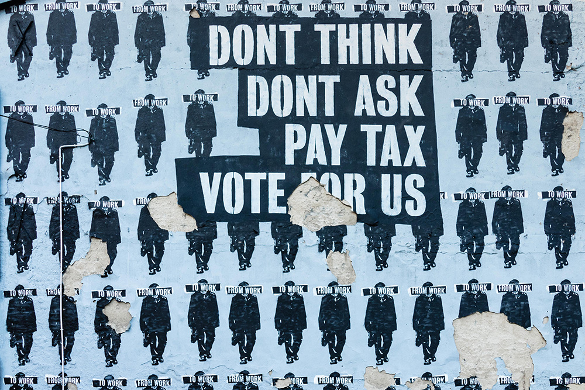

Von Wissenswertem,
zwischen den Zeilen
Mit der anstehenden Europawahl, die zwischen 23. und 26. Mai 2019 stattfindet, geht eines der großen Politikevents in Europa über die Bühne, bei dem die 28 Mitgliedstaaten der EU ein neues Europäisches Parlament wählen. Anders als vielleicht angenommen werden könnte, finden die Wahlen dabei jedoch in jedem einzelnen Land zuerst auf nationaler Ebene statt und werden erst im Anschluss zu einem Gesamtergebnis zusammengerechnet.
Auch in Österreich dürfte der mittlerweile in der Endphase angelangte Wahlkampf der antretenden Parteien nur schwer an jemandem vorübergegangen sein. Nicht zuletzt aufgrund den von Wahlplakaten gesäumten Straßen, unzähligen TV-Duellen und Experten-Debatten in den Medien, Social Media Kampagnen der Parteien oder letztlich durch persönliche Gespräche mit Freunden oder Arbeitskollegen.
Das Ziel der, von den Parteien ins Rennen geschickten Spitzenkandidaten, im Kampf um die kostbaren Wählerstimmen ist dabei relativ parteiunabhängig und in der Regel nach ein und demselben Muster gestrickt. So soll zunächst das eigene Angebot in Form der jeweiligen Positionen vermittelt werden, die Stammwähler mobilisiert, nach Möglichkeit neue Wählergruppen erschlossen und sich bei all dem, last but not least, letzten Endes bestmöglich verkauft werden. Soweit, so gut.
Dass bei diesem Verkauf, dem Buhlen um die Wählerschaft, jedoch immer stärker auf professionelle Imagekampagnen gesetzt wird, die gleichzeitig auch immer größere Teile der Wahlkampfbudgets verschlingen und dabei mitunter nicht nur gewaltige, sondern auch gewaltig über den gesetzlichen Vorgaben liegenden, Dimensionen erreicht haben, macht es den Wählern dabei jedoch nicht unbedingt einfacher sich eine verlässliche Meinung zu bilden.
Unter Berücksichtigung der offiziellen Wahlprogramme kommt darüber hinaus, abgesehen von Umfang, noch die Ähnlichkeit mancher Programme, sowie deren Verständlichkeit erschwerend hinzu, wodurch sich letztendlich für manch Wähler die Wahl mehr als Qual gestaltet.
Besonders deutlich lassen sich diese Unzulänglichkeiten, als auch eine Reihe anderer interessanter Aussagen die sich in den Wahlprogrammen finden lassen, mittels computergestützter Analyse in Erfahrung bringen, wie der folgende Vergleich anschaulich beweist und so vielleicht dem ein oder andren Unentschlossenen dabei hilft, sich ein besseres Bild der zur Wahl stehenden Parteien zu machen und der Qual der Wahl dadurch entgegenzuwirken.